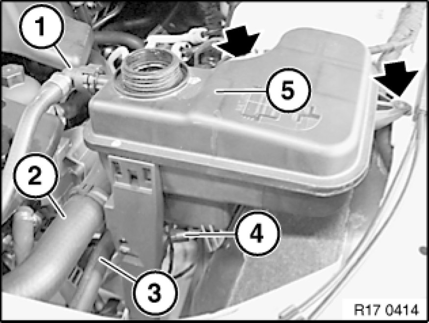

Removing and Installing/Replacing Coolant Expansion Tank (M57TU/M57T2/M47T/2N47)
17 11 100 - Removing and installing/replacing coolant expansion tank (M57TU/M57T2/M47T2/N47)

Necessary preliminary tasks:
- Drain coolant

Detach coolant hoses (1) and (3).
Unclip hose (2).
Disconnect connector (4).
Release screws.
Remove expansion tank (5).
Installation:
Insert locating pin in rubber grommet.